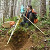

surveying

Definition: Surveying or land surveying is the technique, profession, art, and science of determining the terrestrial two-dimensional or three-dimensional positions of points and the distances and angles between them. These points are usually on the surface of the Earth, and they are often used to establish maps and boundaries for ownership, locations, such as the designed positions of structural components for construction or the surface location of subsurface features, or other purposes required by government or civil law, such as property sales.
Source: Wikipedia
Wikipedia Page (Something wrong with this association? Let us know.)
Wikidata Page (Something wrong with this association? Let us know.)